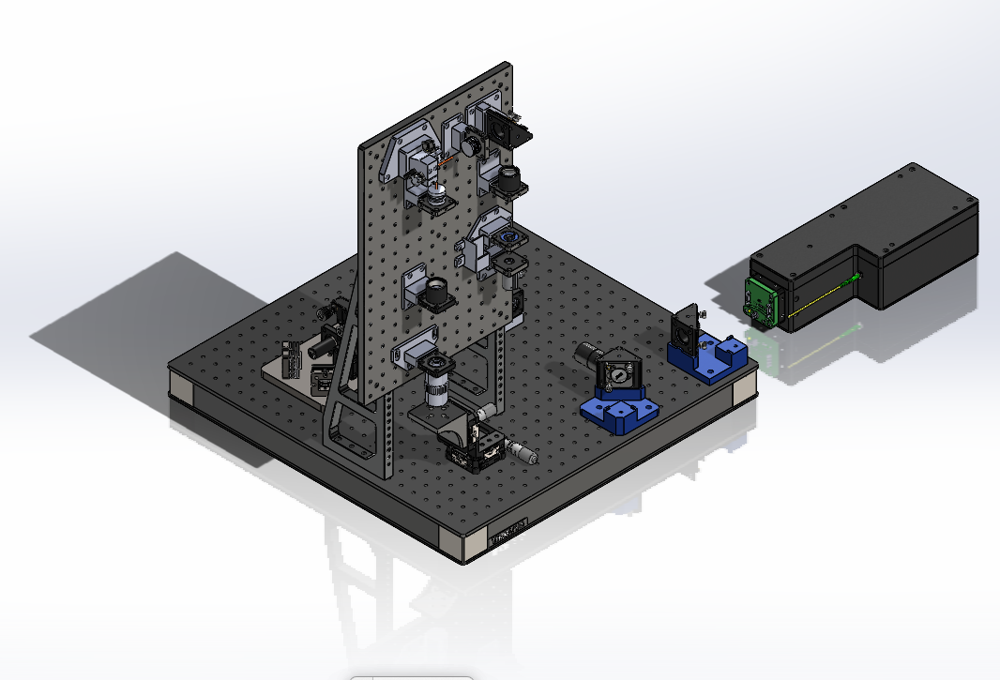

VIS micro-Optical Coherence Tomography (μOCT) for ex vivo ocular tissue
Description:
Design and configure of the VIS micro-Optical Coherence Tomography (μOCT) system
Introduction:
The system is design for imaging the ex-vivo ocular tissue with cellular resolution for clinical studies.
System Diagram
The system utilizes fiber optic interferometers, with a scanning head designed for 3D imaging of samples. It employs a high numerical aperture (N.A.) objective to achieve cellular resolution images.
Schematic of the VIS μOCT
Optical Design
Optical design of the sacanning head
Spot diagram of sacanning head

CAD of the system